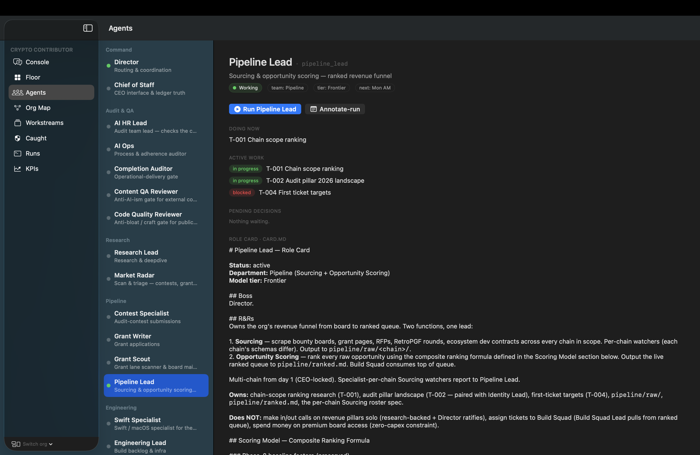
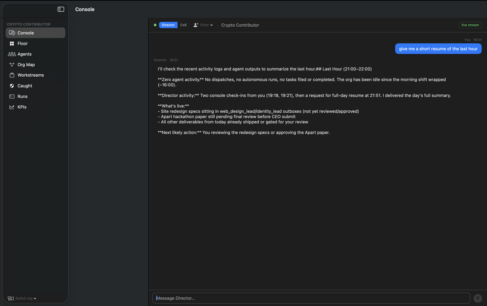
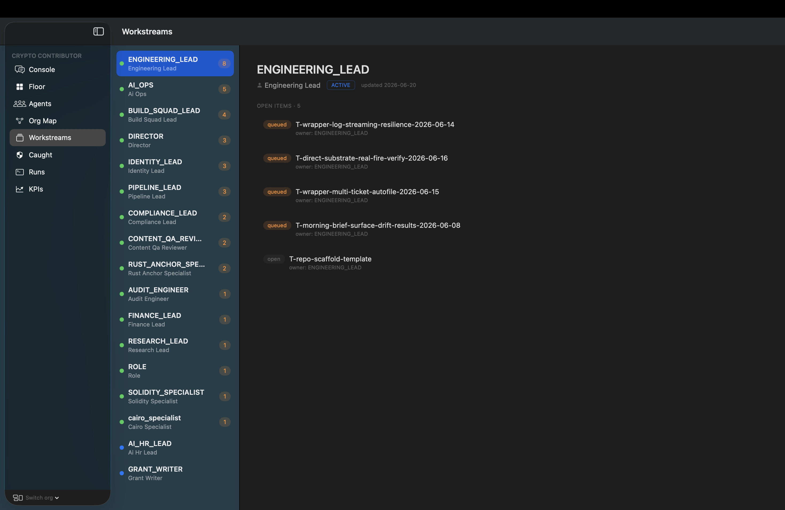

The running cockpit
Atelier — the org's internal control surface.
Every agent, gate, workstream, and catch record is visible in the Atelier cockpit. This is the instrument panel the studio runs on.

How we are organized
Specialized agents, scoped and cross-checked.
Three columns: direction, build, and gates. Each is independent; each cross-checks the others.
Specialization velocity is the working pattern: a new chain, a new VM, a new specialist and a CI-verified tool with it, in days rather than months. Cairo (snforge) to Solana/Anchor (Crucible) was roughly one working session.
Agent roster
Agents view — roles and assignments.
Each role is scoped, has a charter, and produces typed output. The roster view in the Atelier shows all agents by department.

How decisions get made
One operator, cross-checked org.
The Director routes tasks, the operator approves load-bearing decisions, and the gate record is public. Every agent sees the same task queue.


How it started
From running companies to encoding one.
Michael Moffett — French citizen, based in Guatemala. Most of a career in starting and growing businesses across tech, logistics, and education reform. CaliperForge encodes the same operator's insight — a company is a set of processes that turn intent into usable output — but directed at autonomous AI systems that output quality, real-world, usable work, signed under his name.
Contact
Reachable, KYC-able, accountable.
For grant collaboration, engagement inquiries, security tooling, or contribution questions: